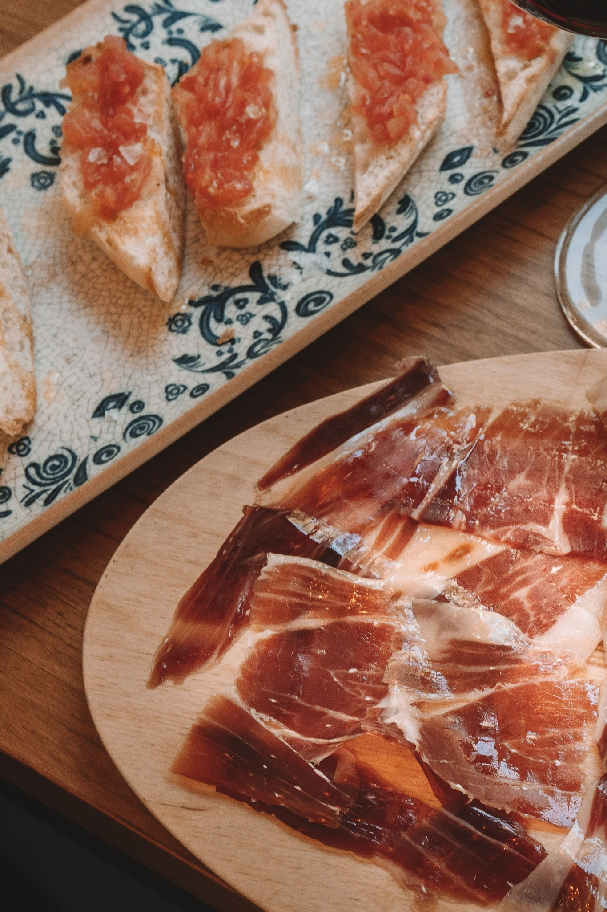

TRADICIÓN EN CADA BOCADO
Pan con tomate,
aceite de oliva y jamón
ibérico
Un clásico mediterráneo sencillo, auténtico y lleno de sabor.

Recetas, tradición e inspiración para disfrutar de nuestra tierra en cada mesa.

Un clásico mediterráneo sencillo, auténtico y lleno de sabor.
Seis propuestas mediterráneas para descubrir todo lo que puedes preparar con los productos ALMAZARA. Inspírate, cocina y disfruta del auténtico sabor mediterráneo.